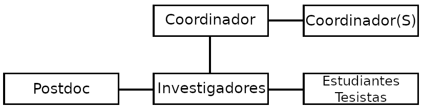

Grupo de Investigación en Análisis Numérico y Cálculo Científico
El Grupo de Investigación en Análisis Numérico y Cálculo Científico (GIANuC²)
de la Facultad de Ingeniería de la Universidad Católica de la Santísima Concepción (UCSC),
es un grupo de investigación creado el 17 de Diciembre de 2020 por académicos de los
Departamentos de Matemática y Física Aplicadas e Ingeniería Civil.
El grupo fue reconocido institucionalmente por la UCSC, como un
grupo de investigación consolidado,
a contar del 3 de Enero de 2023.
La estructura orgánica del grupo se describe en el siguiente organigrama:

La misión del GIANuC² es desarrollar y analizar nuevos métodos numéricos para modelos físicos descritos por ecuaciones diferenciales parciales provenientes
de la mecánica del medio continuo y que se encuentran en diversas áreas del conocimiento, tales como,
Ingeniería, Física, Química, Biología, entre otros.
Entre los métodos numéricos desarrollados por los miembros del GIANuC² se encuentran:
Métodos de Elementos Finitos Primales y Mixtos.
Métodos de Elementos Finitos Estabilizados.
Métodos de Galerkin Discontinuos.
Métodos Mixtos Híbridos Multiescala.
Los que son aplicados principalmente a problemas en los siguientes contextos:
Mecánica de Fluidos.
Mecánica de Sólidos.
Interacción Fluido-Estructura Poroelástica.
Electromagnetismo.
En particular, los miembros del GIANuC² están interesados en: